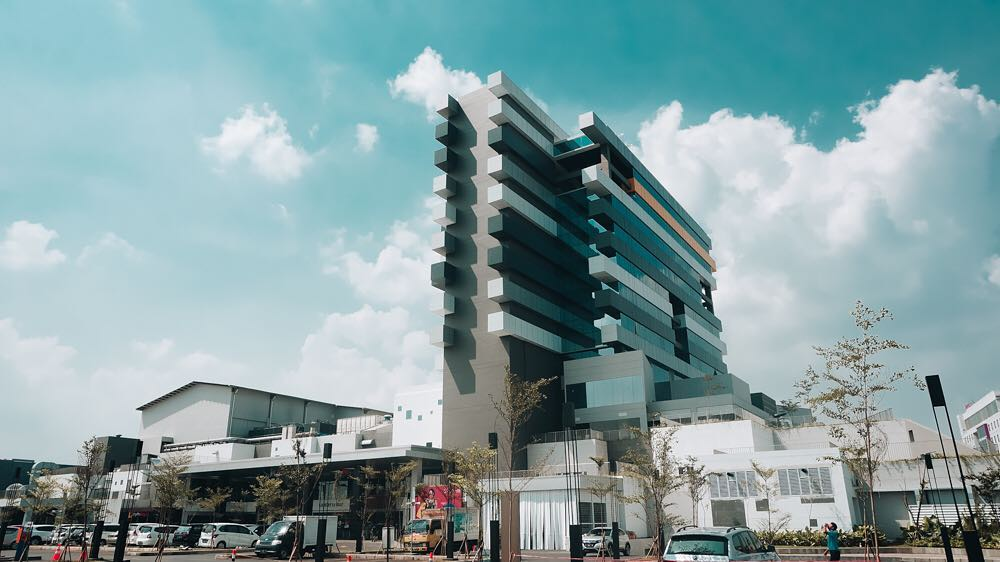

Sejarah
Binus University pada awalnya merupakan sebuah lembaga pendidikan komputer pada tanggal 21 Oktober 1974
dengan nama Modern Computer Course. Kemudian, pada tanggal 1 Juli 1981 peminat tempat belajar ini makin
banyak sehingga nama lembaga tersebut berubah menjadi Akademi Teknik Komputer (ATK). Tiga tahun (1984)
kemudian namanya berubah menjadi Akademi Manajemen Informatika dan Komputer (AMIK) Jakarta. Dan pada tanggal
21 September 1985 AMIK Jakarta berubah nama menjadi AMIK Bina Nusantara.
Pada tanggal 1986 AMIK Bina Nusantara terpilih sebagai Akademik Komputer terbaik oleh Depdikbud melalui
kopertis Wilayah III Jakarta. Karena meningkatnya kebutuhan teknologi dan informasi pada saat itu, pada
tanggal 1 Juli 1987 AMIK Bina Nusantara berubah menjadi STMIK Bina Nusantara dengan program Diploma 3 dan
Strata-1 untuk jurusan Manajemen Informatika, Teknik Informatika dan Ilmu Komputer. Kemudian pada tanggal 20
Desember 1998 STMIK Bina Nusatara berubah menjadi Binus University dengan fakultas: Ilmu Komputer, Ekonomi,
Teknik, Sastra, MIPA, dan program Pascasarjana.
Lokasi Kampus
Sampai Saat ini Binus University memiliki banyak tempat kampus yang salah satunya berada di
Jakarta, Bandung dan Malang.
Greater Jakrta
 Kampus Anggrek
Kampus Anggrek
Kampus Syahdan
 Kampus Kijang
Kampus Kijang
Universitas Bina Nusantara, atau juga dikenal dengan Binus University, merupakan salah satu universitas
swasta yang berlokasi di Jakarta, Indonesia. Berawal dari sebuah institusi pelatihan komputer Modern
Computer Course pada 21 Oktober 1974, dan berkembang dan akhirnya berubah menjadi Universitas pada 8
Agustus 1996, Universitas Bina Nusantara.
Terdapat 3 lokasi kampus yang berada di Jakarta Antara lain yaitu:
| Nama kampus |
Alamat |
| Kampus Anggrek |
Jl. Kebon Jeruk Raya No. 27, Kebon Jeruk, Jakarta Barat 11530. |
| Kampus Syahdan |
Jl. K H. Syahdan No. 9, Kelurahan Kemanggisan, Kecamatan Palmerah, Jakarta Barat 11480.
|
| Kampus Kijang |
Jl. Kemanggisan Ilir III No. 45, Kelurahan Kemanggisan, Jakarta Barat 11480. |
BINUS @Bandung

Dikenal sebagai Kota Pendidikan, banyak institusi pendidikan di Indonesia mulai menyentuh kota ini untuk
dijadikan pusat pengembangan pendidikan dari sekolah dasar hingga perguruan tinggi. Menawarkan konsep
Smart and Green Campus bagi masyarakat Kota Bandung, menjadikan institusi pendidikan yang selama 38 Tahun
yang turut mengambil peran dalam pengembangan pendidikan indonesia mulai membuka jaringan pendidikan di
Kota Bandung yang dimana sebelumnya telah berhasil membuka jaringan pendidikan di Kota Malang pada tahun
2016.
BINUS @Malang
Dikenal sebagai Kota Pendidikan, banyak institusi pendidikan di Iindonesia mulai menyentuh kota ini untuk
dijadikan pusat pengembangan pendidikan dari sekolah dasar hingga perguruan tinggi. Menawarkan konsep
Smart and Green Campus bagi masyarakat Kota Malang, menjadikan institusi pendidikan yang selama 34 Tahun
yang turut mengambil peran dalam pengembangan pendidikan indonesia mulai membuka jaringan pendidikan di
Kota Malang yang dimana sebelumnya telah berhasil membuka jaringan pendidikan di Kota Palembang dan
Semarang di awal tahun 2015.